Quem sou eu ?

Estudante
Pesquisador (tudo que sei é do google)
Professor Substituto Informática IFRS (desenvolvimento web)
Professor Escola Básica URI (foco robótica educacional)
Fascinado por Tecnologia, informação (Mobile)
Formação:
2007 - 2009 - 2º grau (Escola Estadual Ensino Médio Professora Adelaide Picolotto - Ibiaçá-RS)
2009 - 2013 - Curso Superior em Análise e Desenvolvimento de Sistemas (Senac - Passo Fundo-RS)
2014 - 2016 - Mestrado em Computação Aplicada (Unisinos - São Leopoldo-RS)

Conquistas:
2012 - 2012 - I Maratona de Programação. (Carga horária: 8h). Senac.

Onde trabalhei ?
2008 - 2009 - Contabilidade || Debas Contabilidade.
2010 - 2013 - Projetista de Móveis || Móveis Sebben.
2012 - 2013 - Manutenção de Hardware || Trentin Informática.
2013 - 2013 - Desenvolvedor Júnior Trainee || Compasso Tecnologia.
2011 - 2016 - Programador de Interface || Panosul e Lojas Estilo & Conforto.
2014 - 2016 - Mestrando e Bolsista || Unisinos & Mobilab.


O que faço hoje ?
Professor Substituto Informática no IFRS
Projeto Clube de Xadrez
Projeto Olimpíada de Programação
Projeto Informática Comunidade e 3ª idade
Projeto Informática Aplicada Educação (escolas rede estadual)
Projeto Scratch para Jovens e Crianças (Jepex e escolas rede estadual e municipal)
Projeto Android para Iniciantes (escolas rede estadual e municipal)
Projeto Planader (Plataforma digital)


Qual o futuro da Computação ?
Como você o vê ? O que é Marketing Digital ?
Famoso Eniac, 15 de fevereiro 1946
25 mts largura, 5,50 mts altura, 30 toneladas, 270 m²
5.000 operações/segundo, 500 mil dólares
Cálculos balísticos em 30 segundos, calculadora 12 horas
1969 surge Internet, Arpanet.
Adaptadores, dispositivos, cabos...
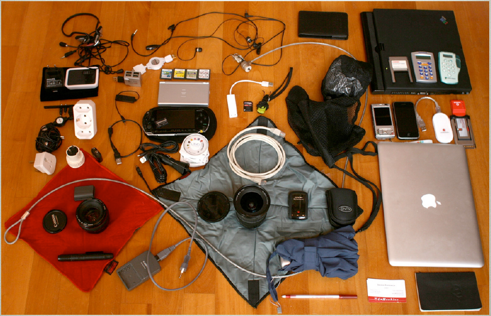Futuro próximo...
Realidade de imagem e ambiente projetado
Realidade de imagem e ambiente projetado

Óculos de realidade virtual
Você se hospedaria em um hotel controlado por Robôs ?
Pensar faz bem... Mas não se esqueça:
O relógio está andando, o tempo está correndo e o Mundo girando...
E você pensando ?
O poder do pulso: Smartphone, celular, relógio, PlayStation...
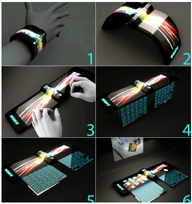O pulso que salva vidas...
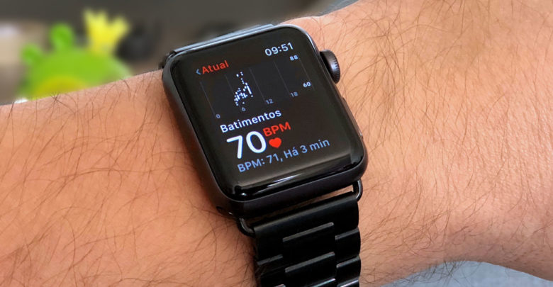Apple Watch salva a vida de americano ao detectar embolia pulmonar
Já pensou em ter um robô que entendesse você ?
Robôs simpáticos
As poderosas Lentes...
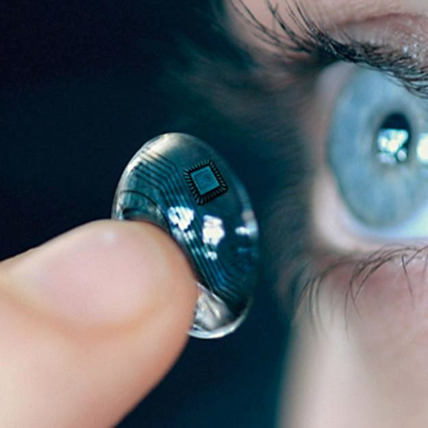Sem TV... Somente projetados, Lentes...
Realidade Aumentada
Cada vez mais Smartphones, 234,6 milhões dispositivos...

Brasil lidera número de smartphones conectados na América Latina
Basílica São Pedro 2005.
Evolução tecnológica desde a morte de João Paulo ao papa Francisco
Basílica São Pedro 2013.

Fiéis tiram fotos com tablets e smartphones enquanto papa Francisco é anunciado no Vaticano
Robôs receberão turistas em Tóquio nos Jogos Olímpicos de 2020.
Bom, e o que é MARKETING DIGITAL ?
Marcar presença na web é um desafio para todas as marcas e em todas as áreas.
Com a quantidade de informações disponíveis, encontrar alguma coisa relevante é quase como achar uma agulha no palheiro.
Por essa razão o marketing digital está cercado de técnicas e ferramentas que auxiliam os profissionais a encontrar e conquistar seus consumidores.
USAR A TECNOLOGIA PARA ENTENDER E CONQUISTAR CLIENTES !
Marketing é marketing, seja offline, seja online !
Segundo Kotler, o marketing é a atividade humana dirigida para satisfazer necessidades e desejos por meio de troca.
Para cada tipo de ação, precisamos do canal específico, do conteúdo correto, das ferramentas adequadas e de muito conhecimento para juntar tudo isso e obter resultado esperado.
Por quê Marketing Digital?
Por quê Marketing Digital?
Por quê Marketing Digital?
Por quê Marketing Digital?
Por quê Marketing Digital?
Por quê Marketing Digital?
"A informação ao seu alcance em qualquer lugar, a qualquer hora."Mahadev Satyanarayanan, 2010.
Principais inovações:
Tecnologia Sem Fio --- Hardware Portátil
Sensores --- Software AdaptativoPrincipais características
Elementos móveis tem pouco recurso em relação aos elementos estáticos
Conectividade móvel
Alto poder de desempenho
Confiabilidade (corre riscos)
Energia, Bateria
Tendências
O foco deve ser: Usabilidade e Interface
Diferentes meios de interação
Consciência de determinado Contexto
Comportamento do Usuário e Perfil
Tesco Homeplus Virtual Subway Store in South Korea
Rede Social HomePlus
Rede Social HomePlus - (Entrega em dias ou horas)
Aplicativos de hoje
Serviços baseados em Localização
Integração com todas as Redes Sociais
Tudo em Nuvem
Uso de Sensores embutidos no aparelho e em outros aparelhos
Sensores em Smartphones
GPS
Acelerômetro
Aproximação
Luminosidade
Temperatura
Pressão
Gesto
Umidade
Sensores S4, Marketing Samsung
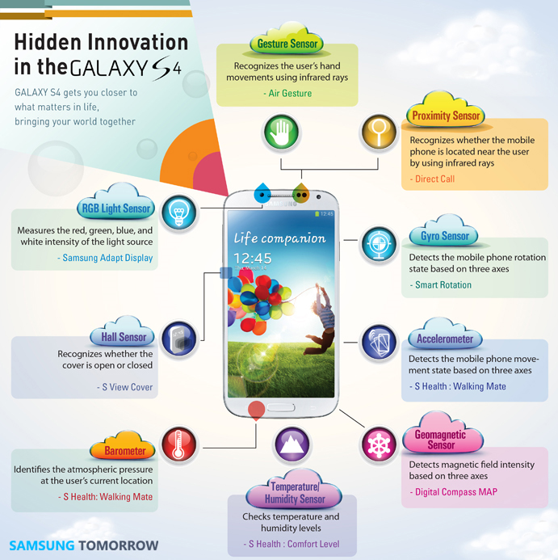Comunicação em Smartphones
3G, 4G
Wi-fi
Áudio
Bluetooth
Câmera
Código de Barras
QR Code
NFC
QRCode
"Quick Response"
Código 2D (textos, páginas da internet, SMS, números de telefone)
Japão em 1994 pela Denso Wave (subsidiária Toyota)
Armazene números, caracteres ou binários
QRCode
QRCode - (Singapura, Compra e Paquera)
Portugal insere QR Codes nas calçadas para promover turismo
Rio Coloca QR Codes em pontos turísticos da cidade
QR Codes aplicado ao turismo
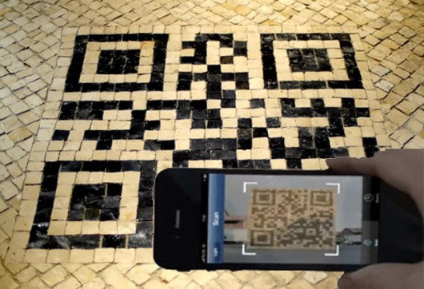NFC
"Near Field Communication - NFC"
Padrão de comunicação via rádio freqüência
Comunicação sem contato
NFC Aplicado ao Turismo
Paypal NFC
BLE
Bluetooth Low Energy (BLE) ou Bluetooth Smart
Padrão de comunicação sem fio (até 100mts)
Muitos dispositivos compatíveis
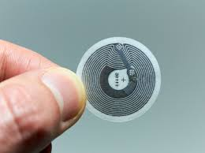Dispositivos Compatíveis com BLE
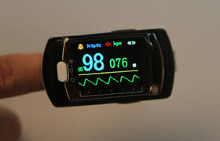 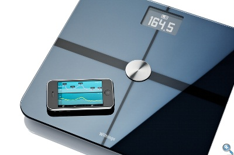Wearables - a moda deixa de ser apenas sobre a aparência
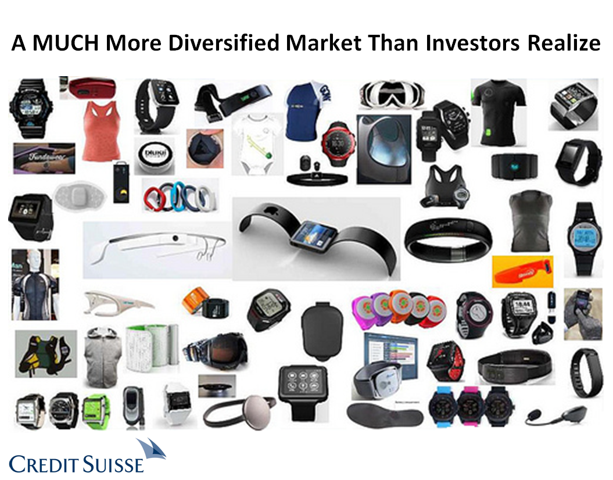Parceria entre o Google e a Levi’s®
Beacons (o que descobrir, como usar)
Beacons, Triangulação, BLE, Apps
Educação, Lojas, Entretenimento, Turismo, Imobiliárias, Pessoas com especialidade
Beacons aplicados ao turismo (Zoológico de Berlín utiliza dispositivos beacon para informar a sus visitantes)
Santa Catarina investe em Beacons
Costa Verde e Mar investe pesado em Beacons
Bombinhas SC atinge 80 mil pessoas com Beacons
SC utiliza Beacons, Navegantes SC.

Turismo – São Joaquim lança aplicativo Destino Inteligente
Exemplo de Beacon
Setor de turismo utilizará tecnologia de Beacons em MG
As lojas do futuro...
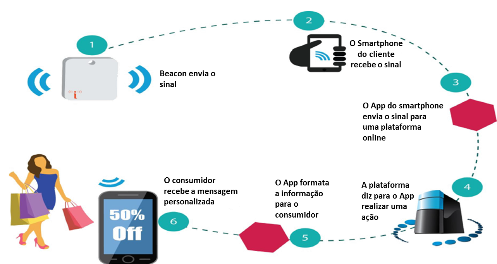As lojas do futuro...
INOVANDO PARA VENDER !
Case Mondelez: Lacta
Uma campanha 100% centrada no meio mobile.
Segmentação indoor, localização.
Dois grupos: usuários dentro supermercado e usuários do aplicativo "meu carrinho" estivessem em supermercados comprando produtos.
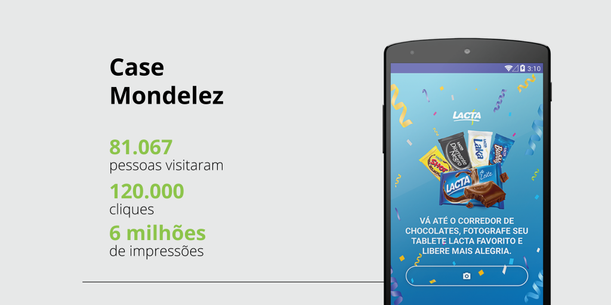INOVAR PARA COMBATER !
Case Criola: Espelhos do Racismo
O grande insight da campanha foi identificar a localização dos agressores.
Essa estratégia foi escolhida porque potencializava as chances de atingirmos os agressores com a campanha.
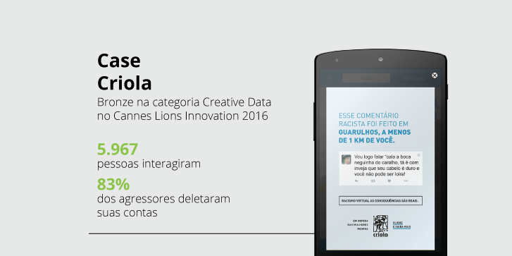Criola
Que tal inovar, você conhece o App Bouquet ?
Os dispositivos vão estar conectados em todos os lugares de forma tão transparente para o ser humano que acabaremos por não perceber que eles estão lá.
Objetivo da Computação ubíqua é tornar a interação homem computador invisível.

O futuro da computação passa pelos olhos...
Lentes de contato inteligentes do Google podem começar a ser vendidas até 2019
Google trabalha lentes de contato inteligentes que medem glicose de diabéticos
Wingman Seduzindo Mulheres
Como consumir informações... E ferramentas de marketing digital...
Transporte público, intereção ?
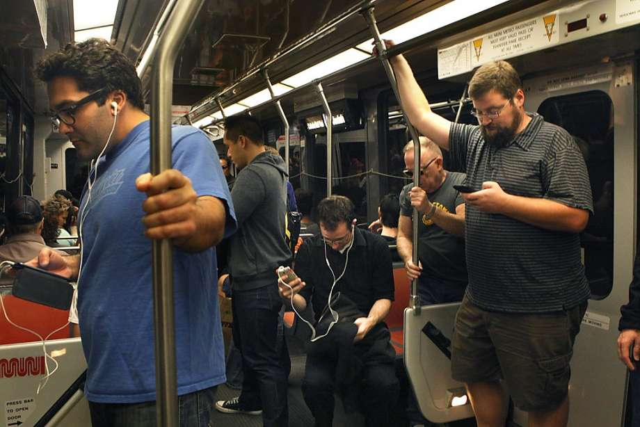Tranformação dos dados e informação em conhecimento...

Qual é o problema?

Excesso de Informação
A solução?
Não necessitamos tanta informação
Criarmos Hábitos
Desejo de conhecer tudo sobre um assunto
Medo de ficar desinformado
Medo de perder oportunidades
Restringir acessos, limitar o que vejo
Como as empresas, e o mundo tem mudado ?
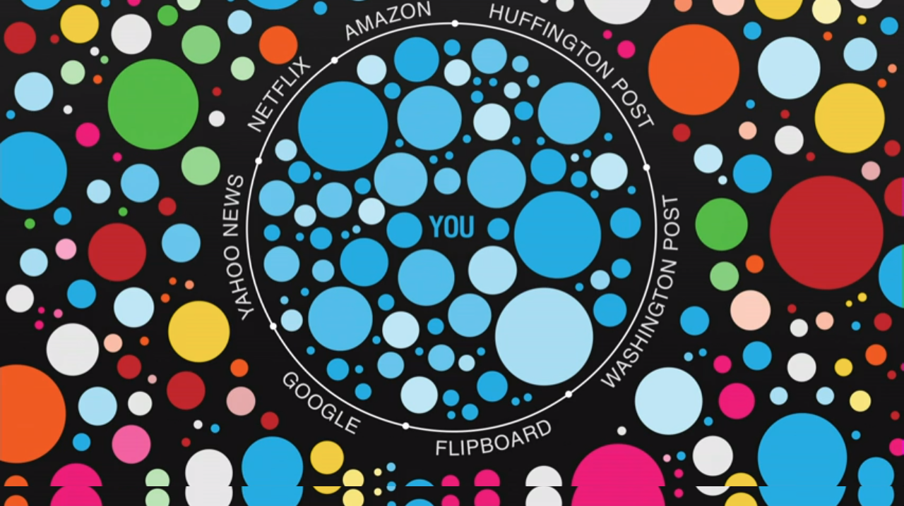Como funciona o Google, o Facebook ?
A mudança atual... Declarações fortes.
“A morte de um esquilo, na frente de sua casa, pode ser mais importante para você do que pessoas morrendo na África.” Mark Zuckerberg, fundador do Facebook, maior rede social do planeta, com mais de 1,4 bilhão de cadastrados até janeiro deste ano.
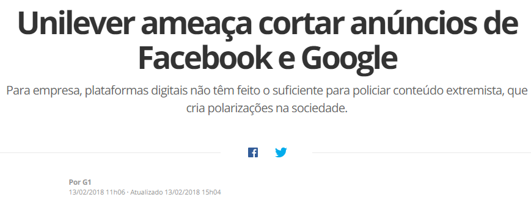Mas o que o Google sabe sobre você ?
TUDO !!!
https://olhardigital.com.br/noticia/veja-tudo-que-o-google-sabe-sobre-voce/48616
Quais aplicativos você usa...
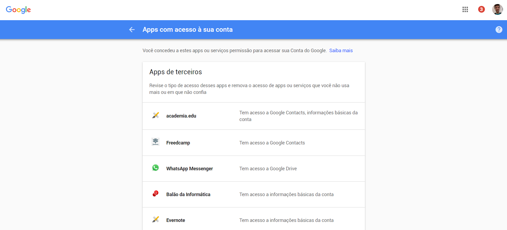https://myaccount.google.com/permissions
O Google sabe tudo o que você já pesquisou – e excluiu
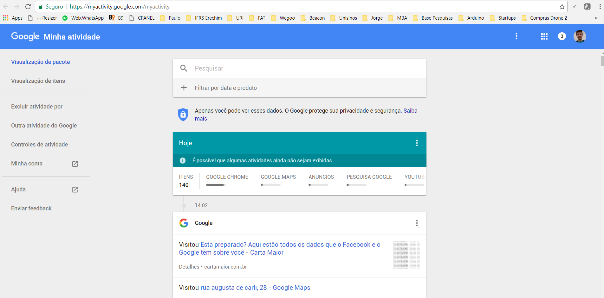https://myactivity.google.com/myactivity
O Google tem um perfil de anúncio de você
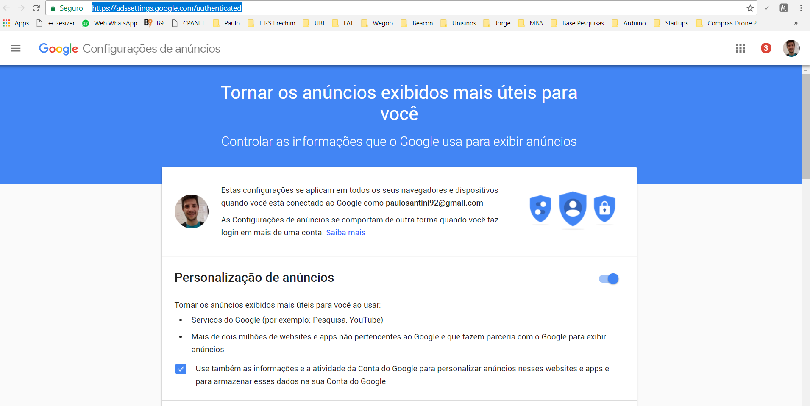https://adssettings.google.com/authenticated
Onde você esteve e está...
https://www.google.com/maps/timeline?pb
O histórico do seu Youtube...
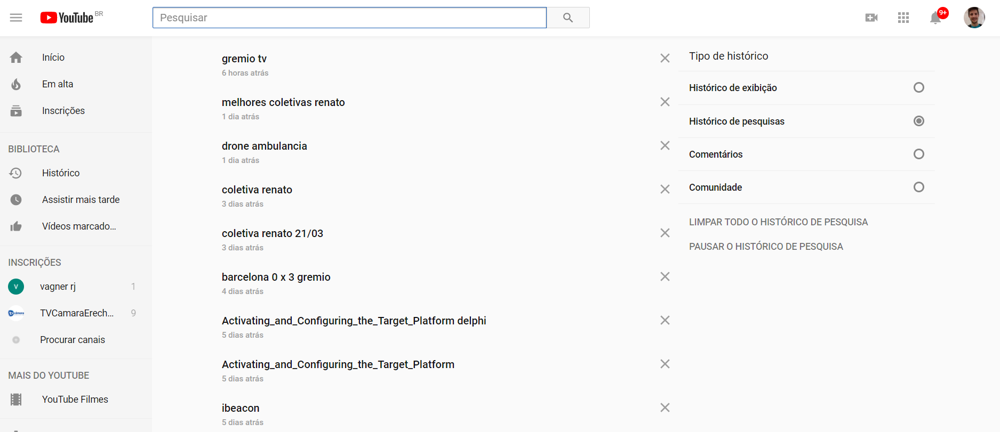https://www.youtube.com/feed/history/search_history
O que o Google sabe de você equivalem a milhões de arquivos do Word...
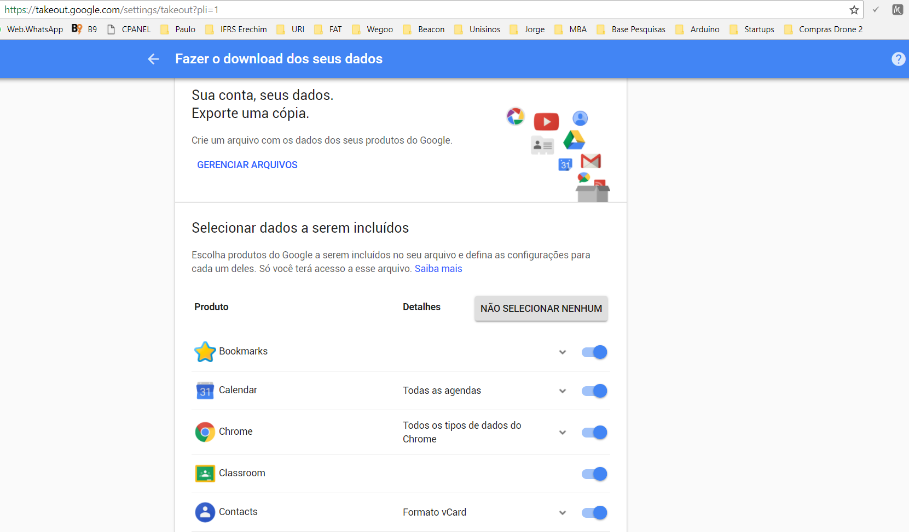https://takeout.google.com/settings/takeout
O histórico de pesquisa, que tem 90.000 entradas diferentes...
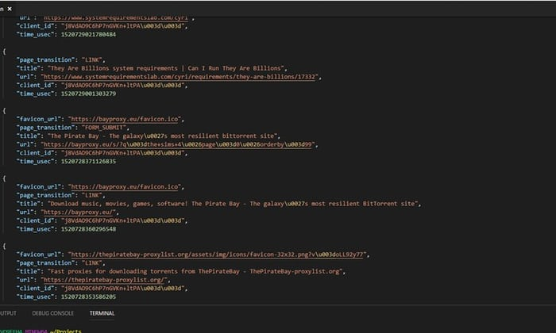O Google sabe a que compromissos você compareceu e quando...

E o Google tem informações que você excluiu...
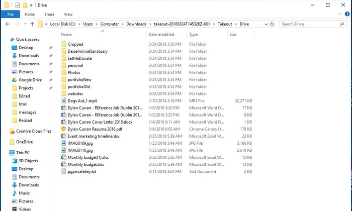O Google pode saber sua rotina de exercícios...
Eles têm anos de fotos...
O Google tem todos os e-mails que você já enviou...

O que é Heat Map...
É um mapa de visualização que permite ver onde e como os visitantes interagem com uma página da web, onde eles estão.
Número de cliques, onde, quando e como clicaram...
Como acho o mapa de calor do meu site ?
Hotjar, mouseflow, Sumo, vários plugins wordpress.
Mapeamento dos pontos...
Mapas que mostram quem somos, e não apenas onde estamos...
O que frequentamos, onde vamos, do que gostamos.
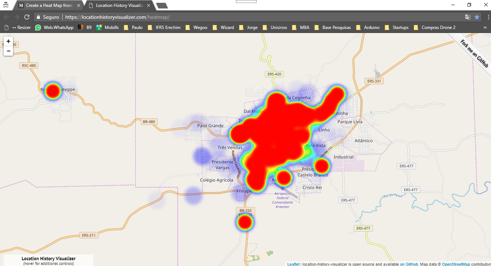Como gerar o meu mapa de calor ?
1) Google Timeline
2) Google Takeout
3) Heat Map Feature
Mas o que o Facebook sabe sobre você ?
TUDO !!!

https://canaltech.com.br/redes-sociais/descubra-o-que-o-facebook-sabe-sobre-voce/
O Facebook também tem pilhas de dados seus...
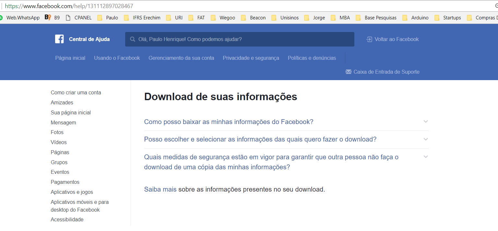https://www.facebook.com/help/131112897028467
Aprendendo a baixar os meus dados Facebook...
Aprendendo a baixar os meus dados Facebook...
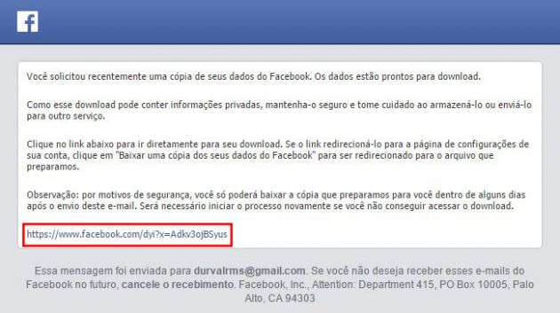O Facebook armazena tudo, desde suas figurinhas do Messenger até seu local de login
Armazena o que acha que pode a você interessar com base nas coisas que você curtiu e nos temas sobre os quais você e seus amigos falam e se interessam
Cada login feito por você
Todos apps que você se conectou
Tanto Google, quanto Facebook podem acessar sua webcam e microfone
Tráfego / Conversão
Google Trends
Google Analytics
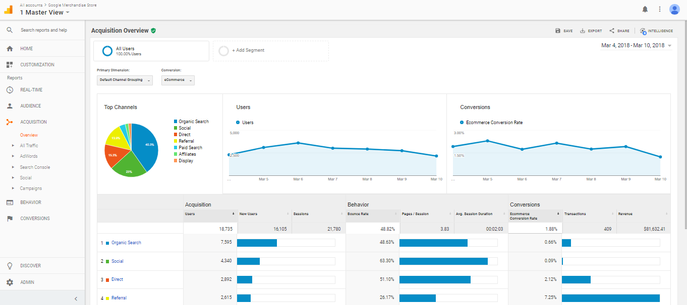Semrush
Moz
E-mail Marketing

Divulgação em Blogs

Google Optimize
Geração de Mapa de calor, Posts em redes sociais.
Google Adwords, Adsense.
Google Adwords, Adsense.
Redes sociais
Linkedin, pinterest, facebook, twitter, instagram... Story instagram. Criação de lugares públicos no mapa do google e do facebook, padronização de url.
O que é relevante ?
INFORMAÇÃO
"A maneira mais efetiva de se
gerenciar a mudança é criá-la."
Peter Drucker.
Obrigado pela atenção !
Referências
Apresentação DR. Cristiano André da Costa
Mobile and Ubiquitous Computing - DR. Cristiano André da Costa
Mobile and Ubiquitous Computing - DR. Cristiano André da Costa
Tesco
Tesco 1 --
Tesco 2 --
Tesco 3
QRs Code
QRs Code
Near Field Communication - NFC
NFC 1 --
NFC 2 --
NFC 3 --
Bluetooth low energy - BLE
BLE 1
LifeWatch V
LifeWatch V 1
Iwatch Apple
Iwatch Apple 1
Referências
QR code
QR Code 1 --
QR Code 2 --
QR Code 3 --
O computador do Século XXi
O Computador do Século XXI 1
Cenas de filmes em tempo real
Cenas de filmes em tempo real 1
Computação Ubiqua
Computacao Ubiqua 1 --
Computacao Ubiqua 2 --
Computacao Ubiqua 3 --
Computacao Ubiqua 4 --
Computacao Ubiqua 5 --
Computacao Ubiqua 6
Google e Facebook